کامامد چشم دوم رادیولوژیست
معرفی سامانه
چهار نمای ماموگرافی
کنترل کیفیت ورودی
شبکه عصبی کانولوشنی چندمرحلهای
خروجی
امتیاز آزمون هوش مصنوعی
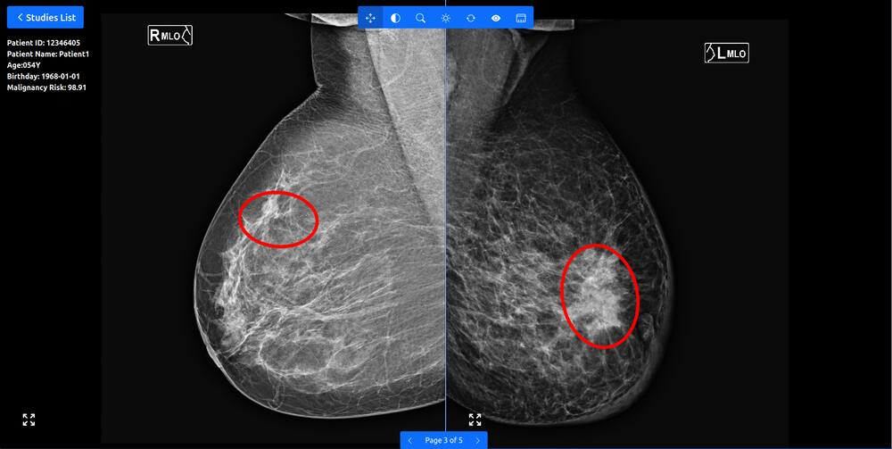
کمک به تفکیک BIRADS ۳ و ۴
دقت تشخیصی بهتر در پستانهای متراکم
بیش از ۹۲٪ تومورهای مشکوک
رادیولوژیست و چشم دوم
«هوش مصنوعی جایگزین رادیولوژیستها نمیشود، اما رادیولوژیستهایی که از هوش مصنوعی استفاده میکنند، جایگزین رادیولوژیستهایی میشوند که استفاده نمیکنند.» Curtis P. Langlotz, MD, PhD — Director of the Artificial Intelligence Center at Stanford Medicine
«هوش مصنوعی دیگر صرفاً یک گزینه نیست؛ قلب تپنده پیشرفت است و برای دنیایی که میسازیم ضروری است.»
مشکل محدودیتهای انسانی
یادگیری از تصاویری بیش از عمر یک رادیولوژیست
چشم دوم رادیولوژیست
مراکز نصب و بهرهبرداری
مراکز دانشگاهی
علوم پزشکی تهران
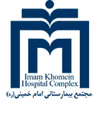
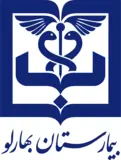
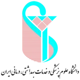
علوم پزشکی ایران
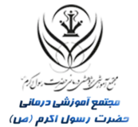
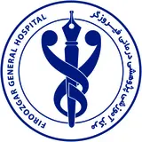
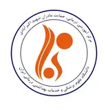
علوم پزشکی زاهدان
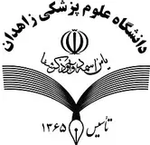
علوم پزشکی کرمان
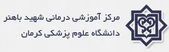
محلات
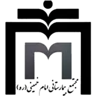
مراکز خصوصی
تهران
بیمارستانها و مراکز خیریه
مشهد
همکاران ما
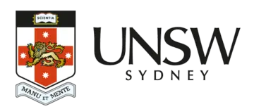
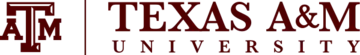
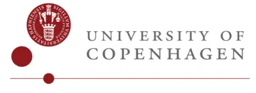
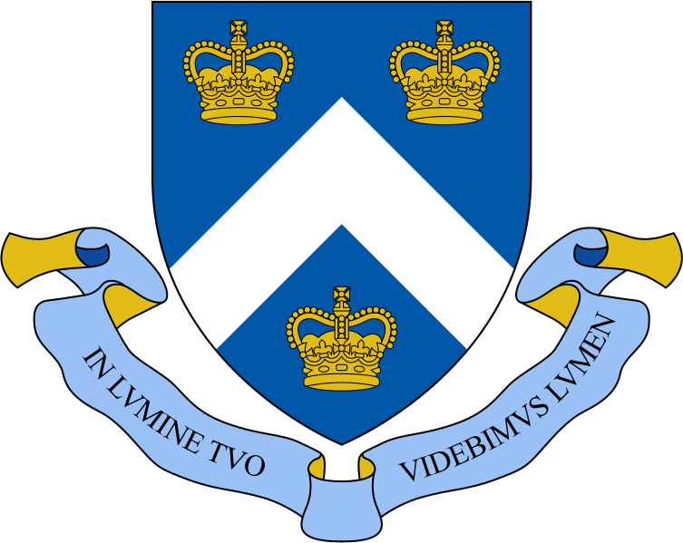
نتایج و اثربخشی بالینی
کاوش در مأموریت و تأثیر ما
ECR ۲۰۲۴: هوش مصنوعی معیارهای تشخیص سرطان پستان را برای رادیولوژیستهای تازهکار بهبود میبخشد
طراحی مطالعه
نوع مطالعه: گذشتهنگر دادهها: ۲٬۴۰۰ ماموگرافی؛ ۴۸۰ مورد سرطان با تأیید بیوپسی و ۱٬۹۲۰ مورد طبیعی با تأیید پیگیری دوساله خوانندگان: ۴ رادیولوژیست، هر ماموگرافی را هم بدون کمک و هم با کمک هوش مصنوعی تفسیر کردند معیارهای ارزیابی: sensitivity، specificity، AUC و ضایعات از دسترفته
دو گام ارزیابی
گام ۱: تفسیر بدون هوش مصنوعی و گزارش اول؛ ارزیابی عملکرد بدون هوش مصنوعی گام ۲: ارائه پیشبینیهای هوش مصنوعی و گزارش دوم؛ ارزیابی عملکرد با هوش مصنوعی سپس مقایسه با حقیقت زمینی (Ground Truth) و ارزیابی بهبود عملکرد
نتیجه اصلی
نمودار طراحی مطالعه (Design of Study)
گام ۱: بدون هوش مصنوعی
گام ۲: ارائه پیشبینیهای هوش مصنوعی
منحنیهای ROC (همه موارد و هر چهار خواننده)
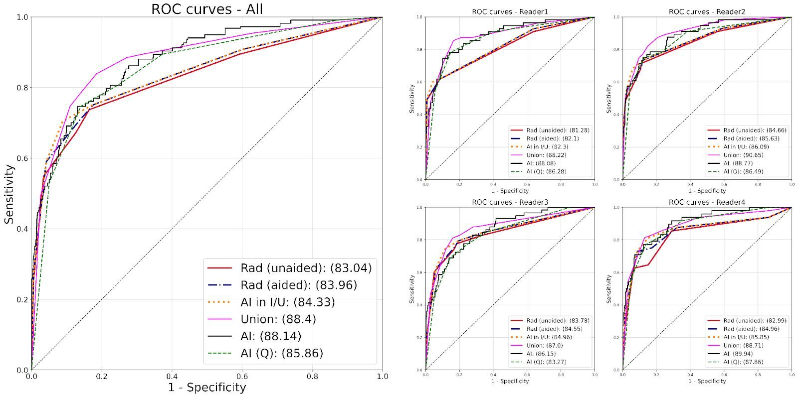
| p-value |
|---|
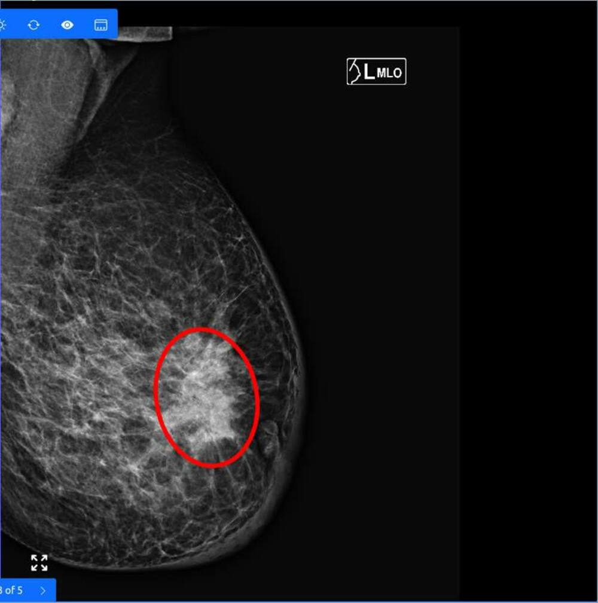
مطالعه آیندهنگر: نرخ Recall
میانگین نرخ Recall بر اساس نیمهسالهای مختلف
اندازه تومور
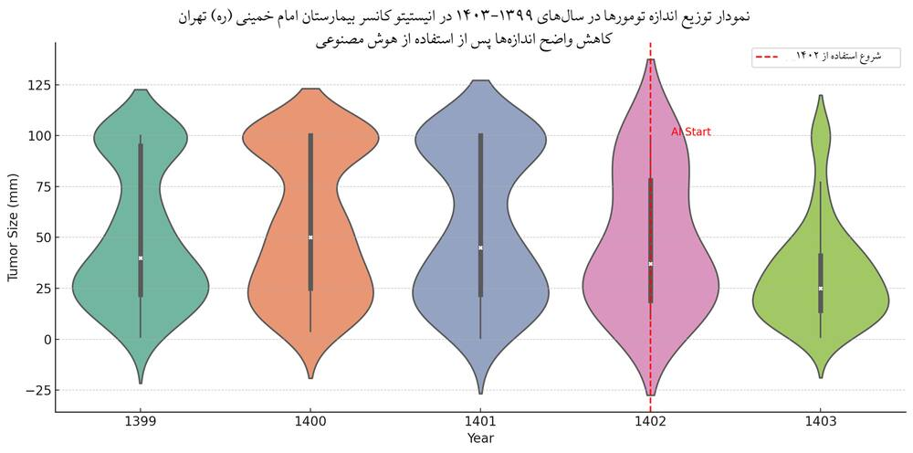
تأثیر بر مرحلهبندی سرطان
آمار جهانی، اقتصاد و خبر
پزشکی شخصیشده
روند رشد سرطان پستان در ایران
شکایات پزشکی
بار اقتصادی سرطان پستان
مقاله ۱: بار اقتصادی سرطان پستان: مطالعه موردی جنوب ایران
Faride Sadat Jalali, Khosro Keshavarz, Mozhgan Seif, Majid Akrami, Abdosaleh Jafari, Ramin Ravangard. Economic burden of breast cancer: a case of Southern Iran. Cost Effectiveness and Resource Allocation 21, 58 (2023). https://doi.org/10.1186/s12962-023-00470-8
مقاله ۲: بار اقتصادی سرطان پستان در غرب ایران: یک مطالعه مقطعی هزینه بیماری
Banafsheh Darvishi Teli, Meysam Behzadifar, Mania Beiranvand, Aziz Rezapour, Seyed Jafar Ehsanzadeh, Samad Azari, Ahad Bakhtiari, Payam Haghighatfard, Mariano Martini, Maryam Saran, Masoud Behzadifar. The economic burden of breast cancer in western Iran: a cross-sectional cost-of-illness study. Journal of Health, Population and Nutrition 44, 16 (2025). https://doi.org/10.1186/s41043-025-00738-0
هوش مصنوعی در اخبار
اخبار و بازتاب رسانهای
دویچهوله (DW) فارسی
بیبیسی فارسی (۱)
بیبیسی فارسی (۲)
جعبه هوشمند GITAI
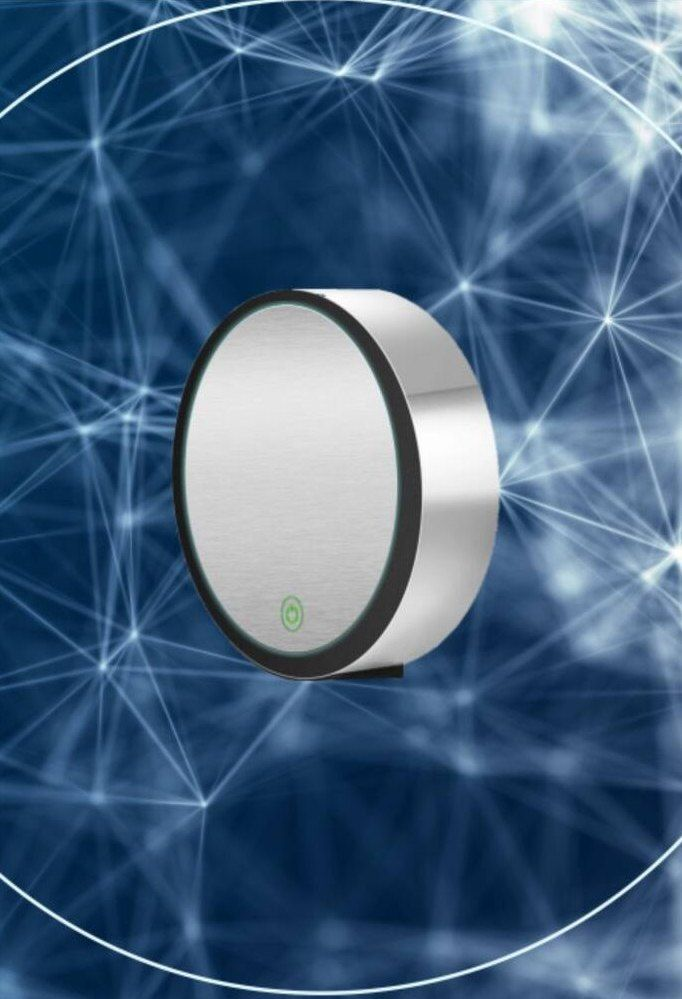
PACS داخلی
تنظیم Hanging Protocol
گزارش رادیولوژی با چند کلیک
بدون نیاز به مانیتور گرانقیمت
بازبینی از راه دور
نصب و استفاده خودکار
مزایای بهرهبرداری
برای بیماران
کاهش مراجعات غیرضروری برای بررسیهای تکمیلی (سونوگرافی، MRI، بیوپسی) افزایش دقت و سرعت تشخیص و تشخیص زودتر بیماری در مراحل اولیه کاهش اضطراب ناشی از ابهام در تفسیر یا نیاز به گزارش مجدد افزایش اعتماد به نتیجه گزارش، بهویژه در بیماران پیگیر یا دارای سابقه خانوادگی
برای بیمارستان و مدیریت مرکز
افزایش کیفیت خدمات تصویربرداری با فناوری نوین و مستند علمی افزایش بهرهوری رادیولوژیستها با کاهش زمان تفسیر و تمرکز بر موارد پیچیده افزایش تعداد بیماران قابل پذیرش در روز بدون افت کیفیت گزارشها تقویت برند علمی بیمارستان بهعنوان مرکز پیشرو در هوش مصنوعی پزشکی خروجیهای آماری برای پژوهشهای داخلی، مدیریت کیفیت و مقالات علمی مشترک سازگاری با HIS / RIS / PACS بدون نیاز به تغییر زیرساخت
برای پزشکان و تیم تصویربرداری
افزایش دقت در تشخیص ضایعات مشکوک پستانی کاهش احتمال خطای انسانی در شرایط خستگی یا حجم کاری بالا افزایش اطمینان در موارد borderline یا دشوار تحلیل عددی و تصویری همراه با ROI و احتمال بدخیمی یکنواختی گزارشها بین پزشکان مختلف (کاهش Variability)